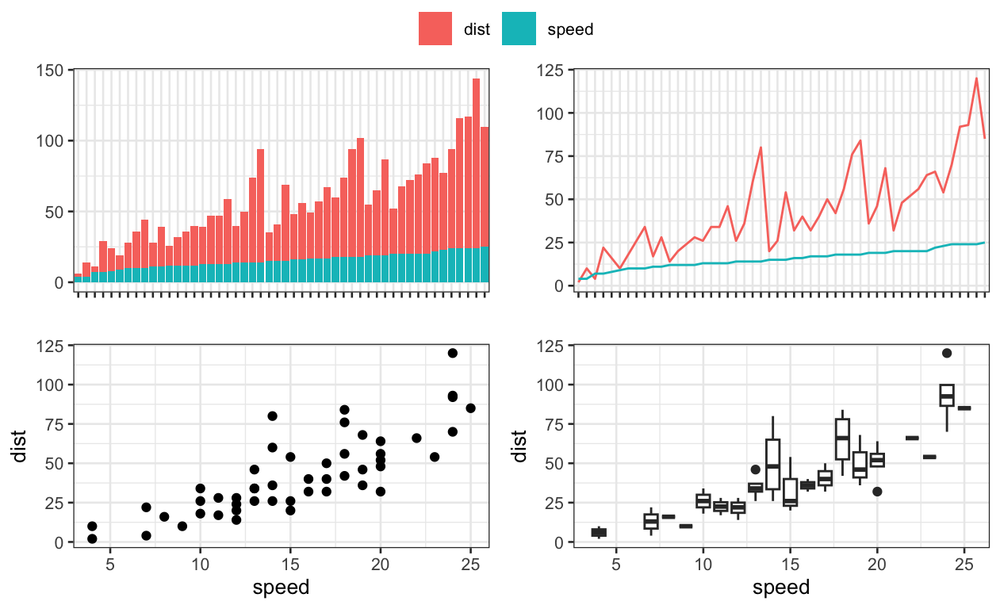
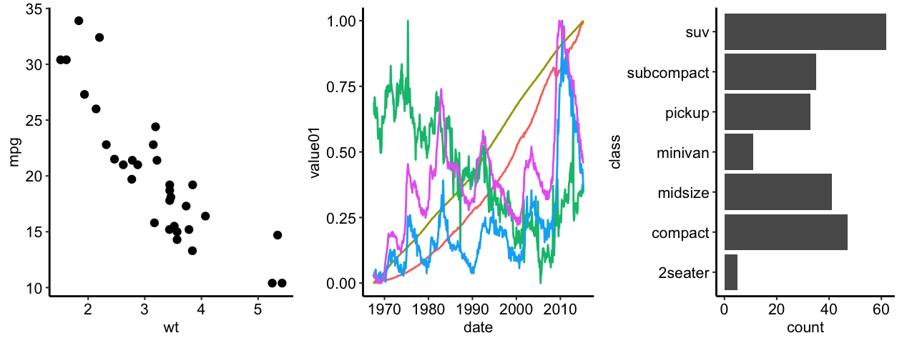
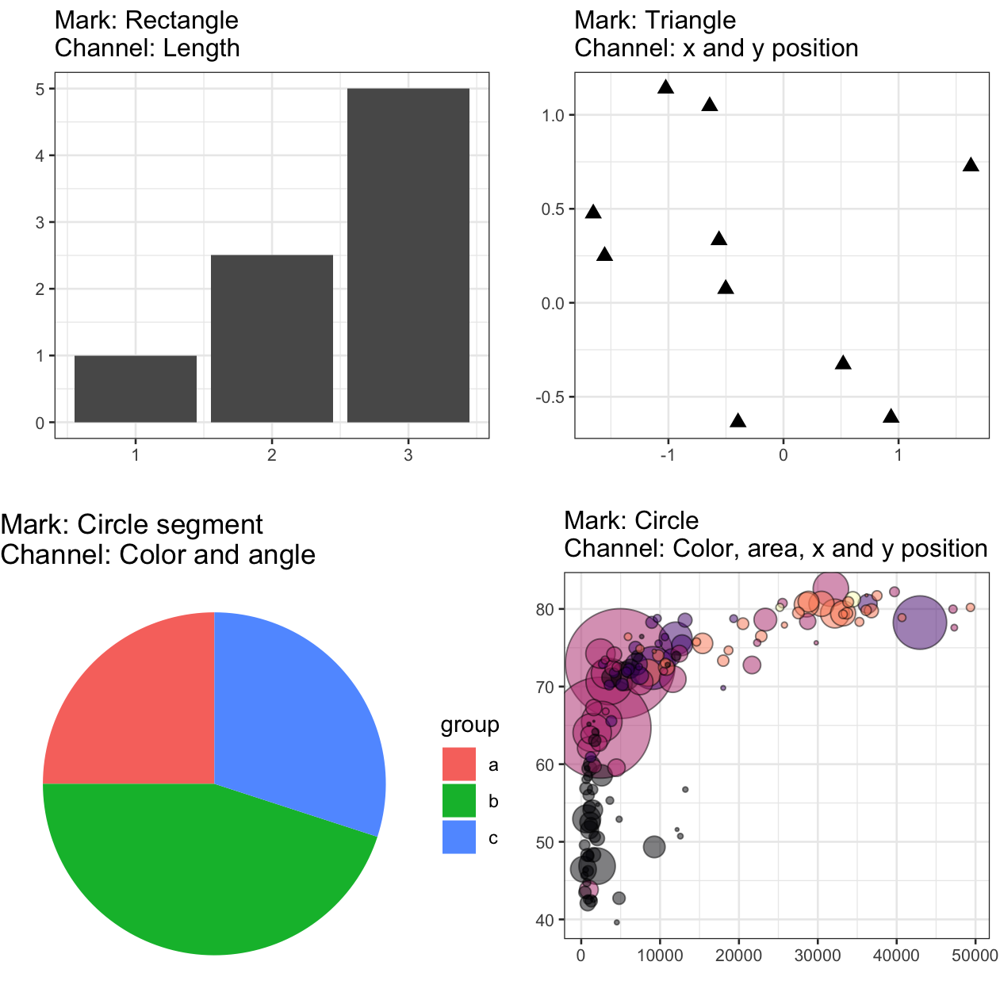

glimpse(cars) Rows: 50
Columns: 2
$ speed <dbl> 4, 4, 7, 7, 8, 9, 10, 10, 10, 11, 11, 12, 12, 12, 12, 13, 13, 13…
$ dist <dbl> 2, 10, 4, 22, 16, 10, 18, 26, 34, 17, 28, 14, 20, 24, 28, 26, 34…Data visualization is, in short, the graphical representation of data. However, it is important to note that it is a scientific discipline focusing on clear and efficient communication of data. The same data can be represented in many ways, which differ not only in clarity and efficiency but also in visual attraction. For example, let’s have a look at the cars dataset from base R:
glimpse(cars) Rows: 50
Columns: 2
$ speed <dbl> 4, 4, 7, 7, 8, 9, 10, 10, 10, 11, 11, 12, 12, 12, 12, 13, 13, 13…
$ dist <dbl> 2, 10, 4, 22, 16, 10, 18, 26, 34, 17, 28, 14, 20, 24, 28, 26, 34…We can represent the same data in many different ways:
barx <- cars %>%
mutate(n = as.factor(1:50)) %>%
gather(key = 'key', value = 'value', -n) %>%
ggplot(aes(y = value, x = n, fill = key)) +
geom_bar(stat = 'identity') +
xlab('') + guides(fill = guide_legend('')) + ylab('') +
theme(axis.text.x = element_blank())
pointx <- cars %>%
mutate(n = as.factor(1:50)) %>%
gather(key = 'key', value = 'value', -n) %>%
ggplot(aes(y = value, x = n, group = key, color = key)) +
geom_line() +
xlab('') + guides(color = guide_legend('')) + ylab('') +
theme(axis.text.x = element_blank())
scatterx <- cars %>%
ggplot(aes(x = speed, y = dist)) +
geom_point()
boxx <- cars %>%
ggplot(aes(x = speed, y = dist, group = speed)) +
geom_boxplot()
ggarrange(barx, pointx, scatterx, boxx, common.legend = TRUE)
However, not all of them are equally useful.
Although each figure plots different data, there are a number of elements recycled to represent data. e.g. points, lines, rectangles, position, color, length:
a <- ggplot(mtcars, aes(wt, mpg)) +
geom_point() +
theme_pubr(base_size = 8)
b <- ggplot(economics_long, aes(date, value01, colour = variable)) +
geom_line() +
guides(color = 'none') +
theme_pubr(base_size = 8)
c <- ggplot(mpg, aes(class)) +
geom_bar() +
coord_flip() +
theme_pubr(base_size = 8)
ggarrange(a, b, c, ncol = 3, nrow = 1)
There are two main types of elements: marks and channels:
Let’s have a look at the following examples and decide what these elements are:
a <- data.frame(x = 1:3, y = c(1, 2.5, 5)) %>%
ggplot(aes(x = x, y = y)) +
geom_bar(stat = 'identity') +
xlab('') +
ylab('') +
ggtitle('Mark: Rectangle\nChannel: Length')
b <- data.frame(x = rnorm(10), y = rnorm(10)) %>%
ggplot(aes(x = x, y = y)) +
geom_point(shape = 17, size = 2.5) +
xlab('') +
ylab('') +
ggtitle('Mark: Triangle\nChannel: x and y position')
c <- data.frame(group = as.factor(letters[1:3]), y = c(25, 45, 30)) %>%
ggplot(aes(fill = group, y = y, x = "")) +
geom_bar(stat = 'identity') +
coord_polar('y', start = 0) +
theme_void() +
ggtitle('Mark: Circle segment\nChannel: Color and angle')
d <- gapminder::gapminder %>%
filter(year == "2007") %>%
dplyr::select(-year) %>%
arrange(desc(pop)) %>%
mutate(country = factor(country, country)) %>%
ggplot(aes(x = gdpPercap, y = lifeExp, size = pop, fill = continent)) +
geom_point(alpha = 0.5, shape = 21, color = "black") +
scale_size(range = c(.1, 24), name = "Population (M)") +
scale_fill_viridis(discrete = TRUE, guide = FALSE, option = "A") +
theme(legend.position = "bottom") +
ylab("") +
xlab("") +
theme(legend.position = "none") +
ggtitle('Mark: Circle\nChannel: Color, area, x and y position')
ggarrange(a, b, c, d)